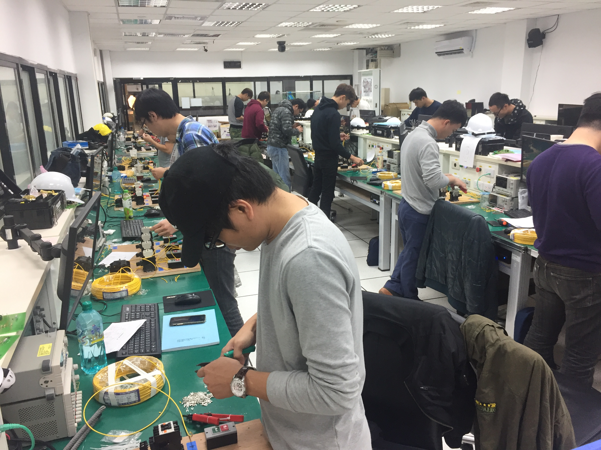

熱門新聞
海外主管返鄉求職 透過職業訓練培養第二專長 在台穩定就業
▲學員在課堂上認真操作控制盤配線 37歲的江先生，三年前由公司派任到越南鋼鐵廠擔任品檢部主管，考量與家人聚少離多，讓他寧捨高薪，也要從越南離職回台。在職場中歷練多年且一直很有危機意識的他，了解回國之後，就算找到同等職位的工作，也很難達到海外的薪資水平，於是上網搜尋開辦職業訓練有成的單位，很順利在「台灣就業通」網站找到未來的目標，打算運用政府資源學習第二專長，讓自己在職場上更有競爭力。
江先生報名勞動力發展署所屬「泰山職訓場」開辦的「升降機裝修」產訓班，甄選面談時雖然充分表達參訓目的及需求，但因為筆試成績不理想未被錄取，不過他不氣餒並加倍用心準備，再次報考一舉拿下高分，順利錄取！
職訓場導師為了讓他先了解培訓後的工作內容是否符合興趣及未來職涯規劃，在開訓前推薦他走訪機電公司，在確定志向後，江先生不僅全心投入課程學習、實際操作，有時在精細技巧的配線操作上不及年紀較輕的學員，他也總是加倍練習，以彌補自己的不足，最終成功考取證照。
經過了紮實的訓練後，江先生帶著專業知識及實務操作經驗入行，即使現在的工作環境從原本的主管辦公室轉換到室外、工地，甚至是悶熱的機房，江先生仍相當珍惜這個機會。因為往後都能安心的帶著妻小，一起回老家團圓，這是犧牲高薪也要爭取的踏實與幸福。正因為擔任主管多年，江生生更知道扎根、建立基礎技能的重要性，他表示：「不要畫地自限，轉職永不嫌晚。」這是他選擇轉職後一直抱持的信念，也鼓勵轉職者都要對自己有信心。
勞動力發展署北分署長林仁昭表示，轄區各職業訓練場開辦多元化的職訓課程，提供「求職者職前訓練」與「在職者進修訓練」，培養專業技能、提升職場競爭力。有意參加「電機設計維修班」、「升降機裝修（產訓班）」的民眾，歡迎逕上「台灣就業通」職訓課程專區報名參訓，或洽詢北基宜花金馬分署：(02)8995-6399#1257／泰山職訓場：(02)2901-8274#2527林小姐、2530官小姐。